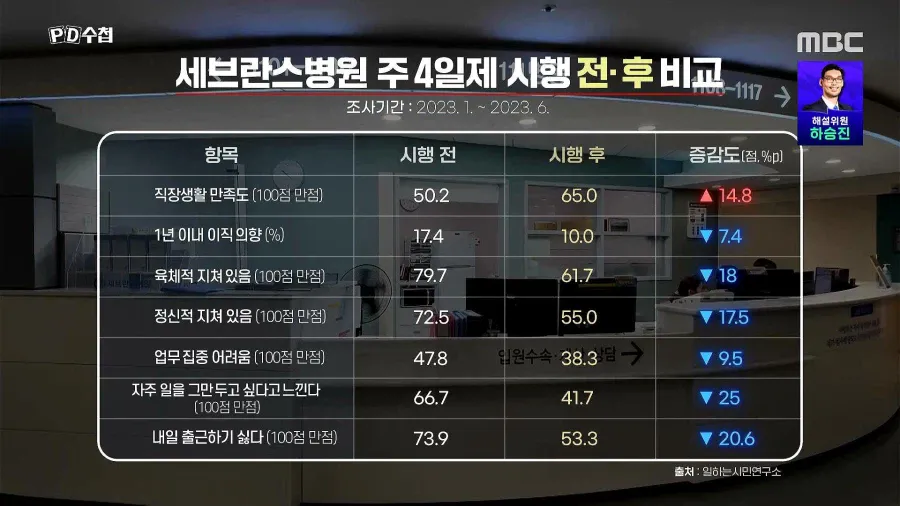

연봉 10퍼 깎여도 그냥 존나 싱글벙글에
삶의 행복도가 떡상했다고 함

연봉 10퍼 깎여도 그냥 존나 싱글벙글에
삶의 행복도가 떡상했다고 함
응~ 나 주 6일임 시발
14년넘게 2교대간호사 했다.
존나 힘들었다
저분들은 ㄹㅇ 존나 힘든 직업이라서 그런 거 아님??
뭐더라 태움?? 때문에 ㅈㄴ 힘든 직업이니
저것도 적응되바라 불만 또 나온다 ㅋ
궁금한건데
왜 꼭 모두가 같은날 쉬어야되는걸까
반 나눠서 너네는 월화수 쉬고 너네는 금토일 쉬어라 했을때의 부작용이 뭔가 있을까?
20프로 까면 생각이 달라짐
기존 연차 시스템도 유지인가?
건설은 왜 아직 주6일?
대학교 5년 하고 졸업하는거부터 해서 연습했자나 ㅋㅋ
아...1년더했으면 의사될수있는데 ㅠㅠ
근데 진짜왜 건축과는 5년 하는거임? 커리큘럼이 긴가??
주4일은 정말 삶이 달라짐. 해외살이 하는데, 사는게 세련되지 못해도 정말 만족스러움.
좀 과장해서, 다시 태어나도 주4일 근무때문에 여기와서 살 것 같다는 생각..
근무시간 20퍼 깎고 월급 10퍼 까면 개이득이지
돈은 행복이 아니다.
근데 행복하지 못할거면 돈이라도 많이 챙겨야한다.
주4일하고 공휴일 없대도 될듯
10% 깎이고 20% 일 안하면 나같아도 좋아
5일제랑 4일제는 실제로 꽤 큰 차이임
5일제 출근/휴일 비율 : 40%
4일제 출근/휴일 비율 : 75%
5년만 지나도 똑같을껄
인간은 만족을 모르니까